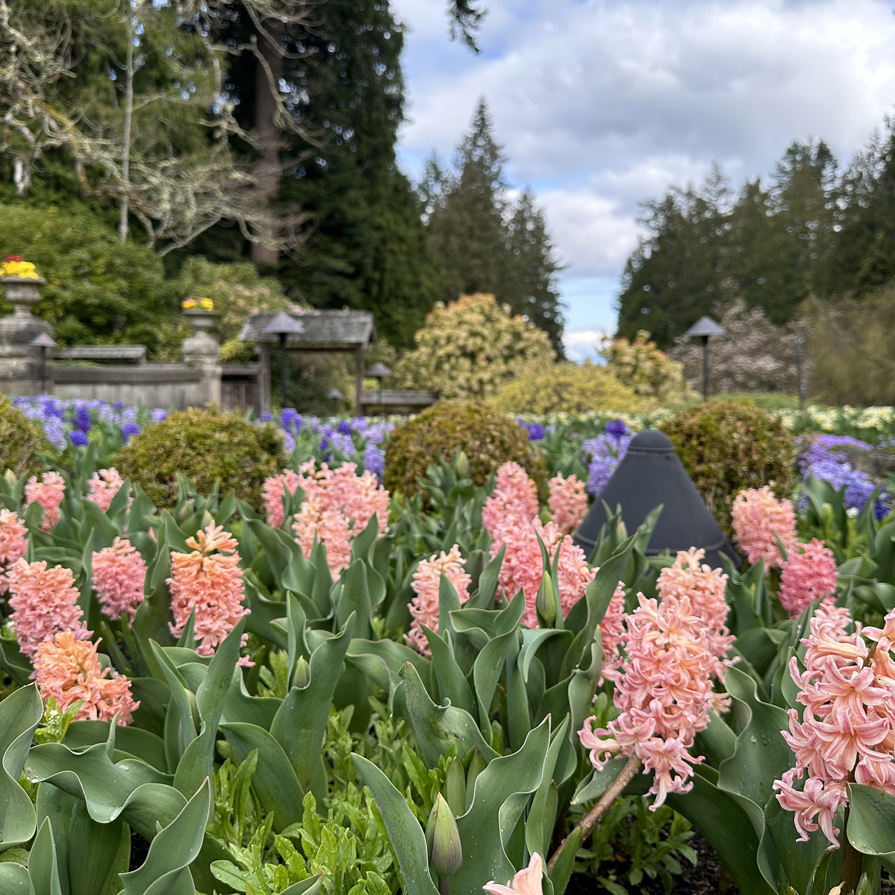
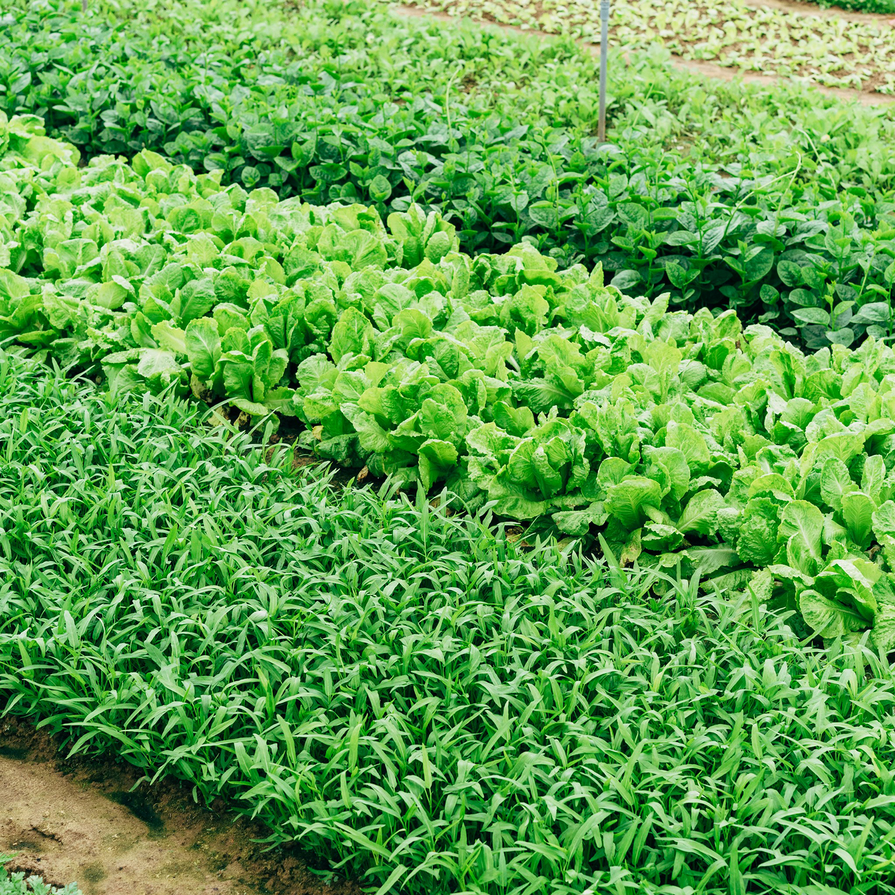
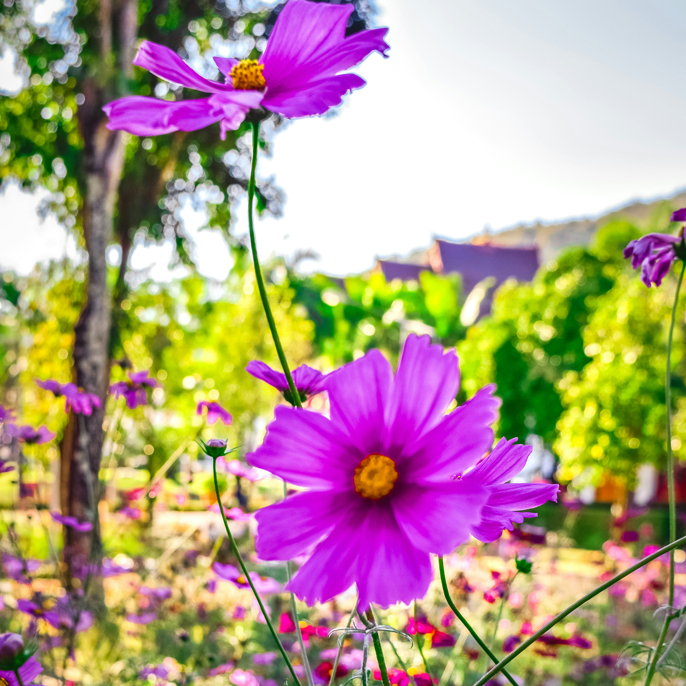
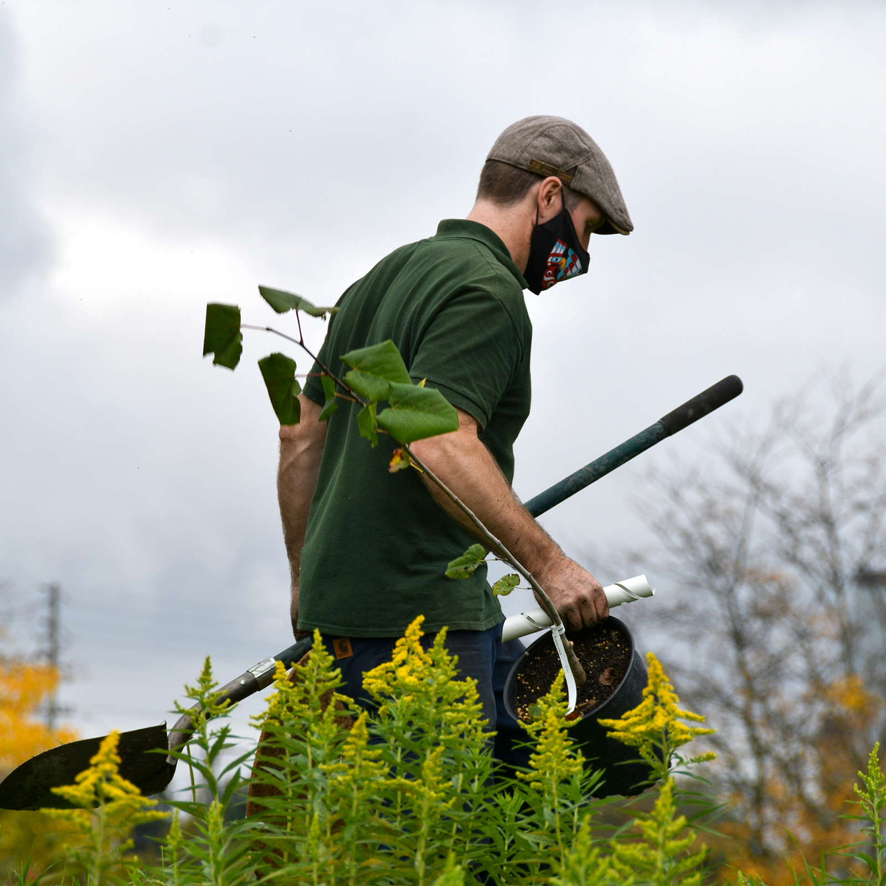
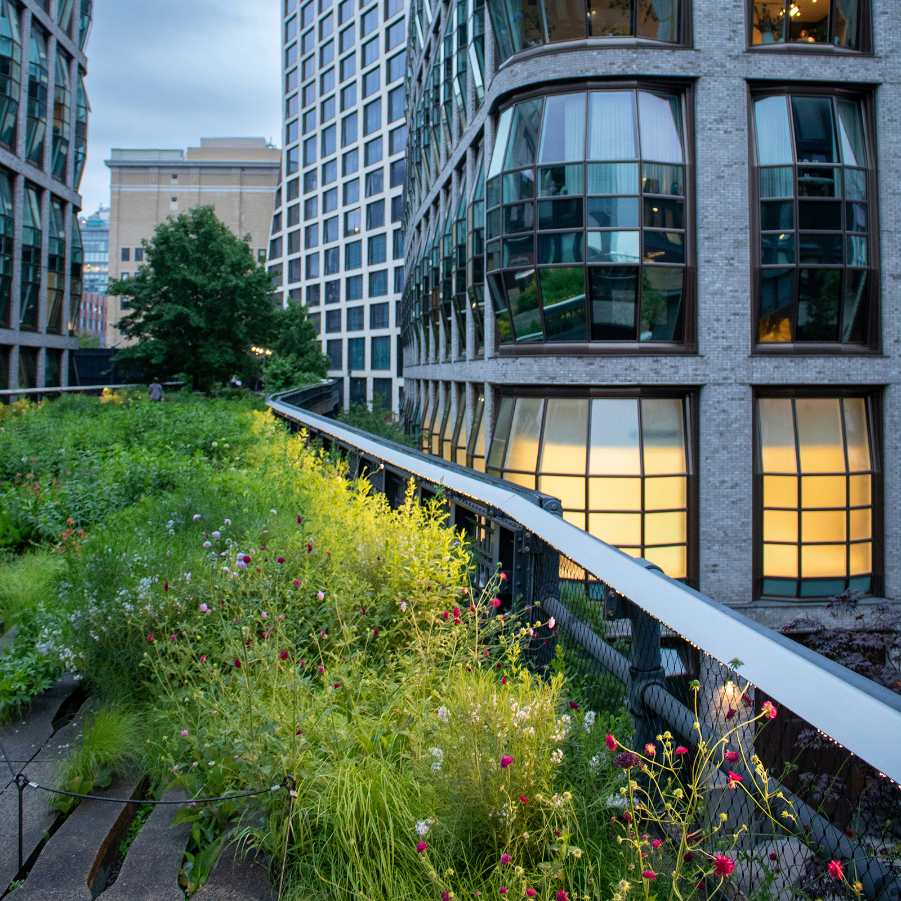
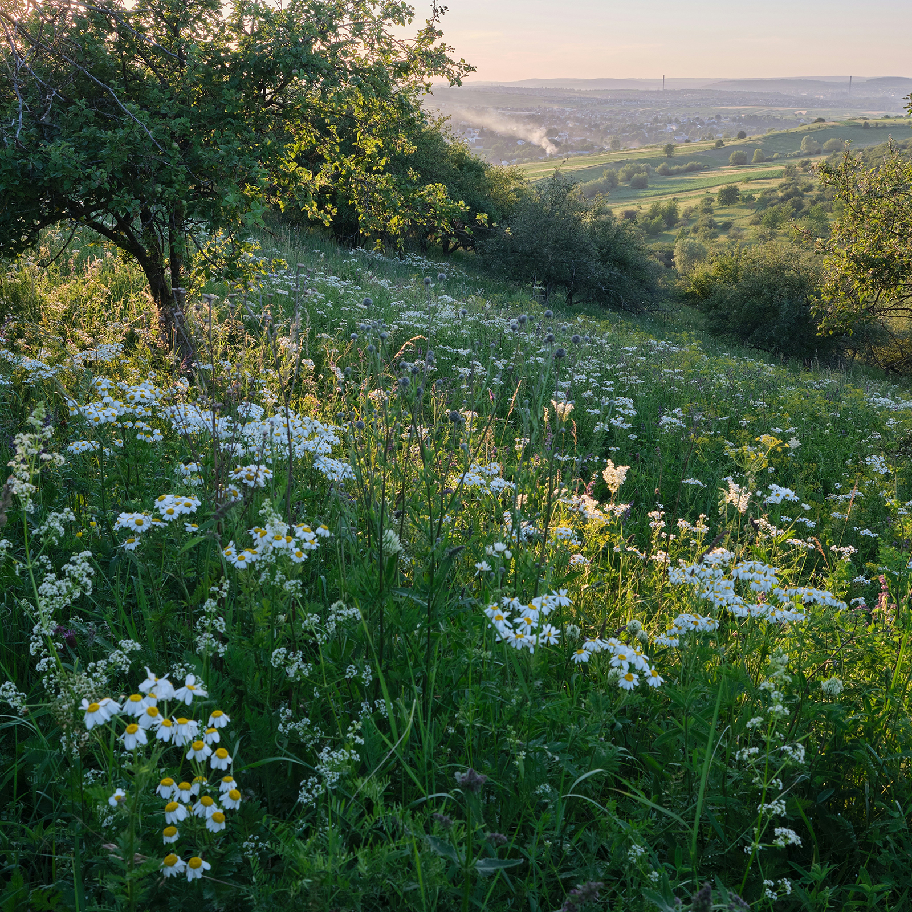

Gallery
Welcome to the Green Sheridan Garden Club gallery! Here, you can explore the vibrant gardens and projects lovingly crafted by our members.
From colorful flower beds to eco-friendly vegetable patches, these images showcase our commitment to creativity, sustainability, and community gardening. We invite you to browse through these beautiful representations of our shared passion for nurturing nature!

Beautiful Flower Garden
This lush flower garden bursts with a variety of colorful blooms, showcasing the artistry and dedication of one of our talented members.
Click here to see more
Vegetable Patch
An abundant vegetable garden, carefully nurtured to produce fresh, organic crops. A perfect example of sustainable urban gardening.
Click here to see more
Herb Garden
This fragrant herb garden is a testament to how small spaces can yield big rewards, offering fresh flavors and aromas year-round.
Click here to see more
Community Planting Day
Members gathered to plant trees and shrubs for a community green space, showcasing the power of collective action for the environment.
Click here to see more
Urban Garden
A beautiful urban garden that brings nature to the city, transforming unused spaces into productive, green havens.
Click here to see more
Wildflower Meadow
This wildflower meadow is a stunning example of how native plants can be used to support local wildlife and create natural beauty.
Click here to see more